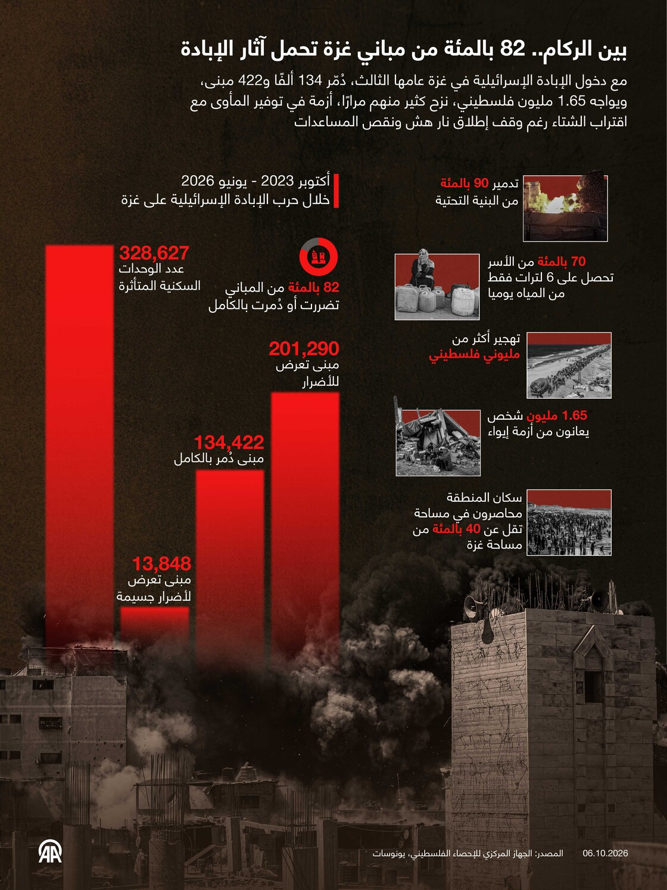

بعد 3 سنوات من حرب الإبادة الجماعية الإسرائيلية، يواجه قطاع غزة خسائر أعادت تشكيل حياته وخريطته العمرانية، بعد فقدانه أكثر من 74 ألفا من أبنائه، وتضرر مئات الآلاف من المساكن فيه، إضافة إلى الدمار الواسع الذي طال مرافق الصحة والتعليم والمياه.
ولم يقتصر أثر هذه الخسائر على ما دمرته الهجمات بشكل مباشر، بل امتد إلى قدرة السكان على استعادة حياتهم، في ظل القيود الإسرائيلية على إدخال المواد والمعدات التي تساهم في التعافي وإعادة الإعمار.
وتكشف الإحصاءات الفلسطينية والأممية أبعاد هذه الخسائر، في وقت ترتفع فيه حصيلة الضحايا باستمرار بسبب تواصل العدوان الإسرائيلي، بينما يعتمد حصر الأضرار المادية على تقييمات ميدانية وأممية وصور الأقمار الصناعية.
وفي تقرير نشره في 5 أكتوبر الجاري، قال الجهاز المركزي للإحصاء الفلسطيني نقلا عن أحدث تقييم أعده مركز الأمم المتحدة للأقمار الصناعية، إن عدد المباني المتضررة نتيجة حرب الإبادة الإسرائيلية حتى 16 يونيو/ حزيران الماضي بلغ نحو 82 بالمئة من إجمالي مباني القطاع.
الخسائر البشرية
حتى 5 أكتوبر/ تشرين الأول 2026، بلغت حصيلة القتلى 74 ألفا و243 فلسطينيا، والمصابين 175 ألفا و232، وفق بيان لوزارة الصحة في قطاع غزة.
ولا تزال الحصيلة تخضع للتحديث مع تسجيل ضحايا جدد جراء استمرار العدوان الإسرائيلي، واستكمال بيانات قتلى سابقين، ففي 3 أكتوبر، أعلنت الوزارة إضافة 181 قتيلا إلى الإحصائية التراكمية بعد اعتماد بياناتهم.
وكان الأطفال بين أشد الفئات تضررا، حيث أفادت معطيات المكتب الإعلامي الحكومي بغزة بأن 21 ألفا و500 طفل قُتلوا منذ بدء الإبادة وحتى يوليو/ تموز 2026.
ومن بين إجمالي قتلى الأطفال، أكثر من 520 رضيعا ولدوا خلال حرب الإبادة الإسرائيلية وقتلوا فيها.
وفي أبريل/ نيسان الماضي، قالت الأمم المتحدة إن مكتبها لحقوق الإنسان يقدر أن ما يقرب من 70 بالمئة من جملة من قُتلوا بغزة حتى مارس 2025، كانوا من النساء والأطفال.
الخسائر المادية
وفيما يتعلق بالخسائر المادية، قال جهاز الإحصاء الفلسطيني المركزي في البيان ذاته إن عدد المباني المتضررة نتيجة العدوان الإسرائيلي على القطاع حتى 16 يونيو بلغ نحو 201 ألف و290 مبنى، منها 134 ألفا و422 مبنى مدمرا بشكل كامل، و13 ألفا و848 مبنى متضررا بشكل بليغ.

وأفاد الجهاز بأن عدد الوحدات السكنية المتضررة في القطاع بلغ 328 ألفا و627.
وفي أبريل/ نيسان الماضي، قالت الأمم المتحدة في تقرير إن "دمارا شبه كامل" لحق بالبنى التحتية الأساسية التي يعتمد عليها المدنيون في غزة للبقاء على قيد الحياة.
وعن القطاع الصحي، قالت منظمة الصحة العالمية في 24 أبريل الماضي إن أكثر من 1800 منشأة صحية، بينها مستشفيات رئيسية إضافة إلى مراكز الرعاية الأولية والعيادات والصيدليات والمختبرات، تعرضت لأضرار جزئية أو دُمّرت بشكل كامل منذ أكتوبر 2023.
وفيما يتعلق بالمدارس، قالت منظمة الأمم المتحدة للطفولة "يونيسف" في تقرير نشرته في مايو/ أيار الماضي، ويغطي الفترة الممتدة حتى أبريل الماضي، إن 98 بالمئة من مدارس القطاع تضررت منذ بدء الحرب.
وأضافت أن أكثر من 93 بالمئة منها بحاجة إلى ترميم شامل أو إعادة بناء كاملة، وأن 81 بالمئة منها تعرضت لضربات مباشرة.
أما عن القطاع الاقتصادي، فأفادت بيانات مؤتمر الأمم المتحدة للتجارة والتنمية "أونكتاد"، الصادرة في 24 سبتمبر/ أيلول الماضي، بأن الحرب ألحقت أضراراً أو دمرت 92 بالمئة من المنشآت الاقتصادية في غزة، وأدت إلى "توقف شبه كامل للنشاط الإنتاجي في جميع القطاعات".
تراجع القدرة على استعادة الحياة
وفي السياق، أفادت تقارير محلية ودولية بأن الفلسطينيين فقدوا قدرتهم على استعادة الحياة في ظل استمرار النزوح وصعوبة الوصول إلى الخدمات المختلفة، ووسط تقديرات أممية بتراجع التنمية البشرية بما يعادل 77 عاما.
وشكل النزوح أبرز مظاهر التغيرات التي طرأت على حياة الفلسطينيين جراء الإبادة، حيث أفادت معطيات المكتب الإعلامي الحكومي، في أغسطس/ آب الماضي، بأن نحو 2.15 مليون نازح فلسطيني من أصل 2.4 مليون نسمة، يعيشون "ظروفا إنسانية قاهرة"، بينهم 800 ألف يقيمون في خيام غير صالحة "للحياة الآدمية".
وفي سبتمبر الماضي، أوضحت معطيات المكتب الحكومي أن 60 بالمئة من خيام النازحين مهترئة وبحاجة إلى استبدال فوري، بواقع 162 ألف خيمة من أصل 270 ألفا.
بينما أكد مكتب الأمم المتحدة لتنسيق الشؤون الإنسانية "أوتشا"، في 5 أكتوبر الجاري، أن نحو 279 ألف شخص يلجأون إلى 400 موقع نزوح معرض للفيضانات خلال فصل الشتاء، ما نسبته 13 بالمئة من إجمالي سكان القطاع.
وأوضح أن أكثر من 2300 شخص يقيمون في مبانٍ غير آمنة تتطلب الهدم.
وفي حديثها عن الأطفال، قالت "يونيسف" في سبتمبر الماضي، إن نحو مليون طفل في قطاع غزة بحاجة إلى الدعم النفسي والاجتماعي.
ووفقا لأخصائيين نفسيين، تؤثر الصدمات النفسية التي يتعرض لها الأطفال في قدرتهم على التكيف مع الظروف المحيطة، وقد تنعكس على سلوكهم وتركيزهم وتحصيلهم الدراسي.
كما أشار مكتب "أوتشا"، في 25 سبتمبر الماضي، إلى أن نحو 200 ألف طفل بقوا خارج المدارس رغم بدء العام الدراسي الجديد في 19 من الشهر ذاته.
تكلفة التعافي
وفق التقديرات الدولية، فإن تكلفة التعافي وإعادة الإعمار في قطاع غزة تقدر بنحو 71.4 مليار دولار أمريكي.
وقال تقرير تقييم نهائي لأضرار غزة وخسائرها الاقتصادية واحتياجاتها للتعافي وإعادة الإعمار، أجراه الاتحاد الأوروبي والأمم المتحدة بالتعاون مع البنك الدولي، في أبريل الماضي، إن المبلغ الإجمالي يشمل نحو 26.3 مليار دولار مطلوبة "خلال الأشهر الـ18 الأولى لاستعادة الخدمات الأساسية، وإعادة بناء البنية التحتية الحيوية، ودعم الانتعاش الاقتصادي".
وقدر التقرير الأضرار المادية في البنى التحتية بالقطاع بنحو 35.2 مليار دولار، والخسائر الاقتصادية والاجتماعية بحوالي 22.7 مليار دولار.
وفي 8 أكتوبر 2023، بدأت إسرائيل حرب إبادة جماعية على قطاع غزة، بدعم أمريكي.